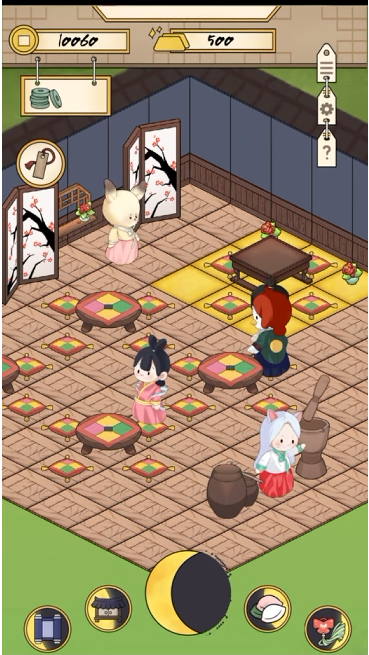

PROJECT REPORT
PROJECT REPORT // 보름달 방앗간
A* 길찾기와 커스텀 타일 데이터를 기반으로 직원·손님의 타이쿤 서비스 루프를 구현한 Unity 프로젝트

보름달 방앗간은 손님을 맞이하고 음식을 조리·서빙하며 매장을 운영하는 2D 타이쿤 게임입니다. 저는 Unity Tilemap 위에서 동작하는 *A 길찾기, 커스텀 타일 데이터, 직원·손님 AI**를 구현해 매장의 공간 정보가 실제 서비스 흐름으로 이어지도록 설계했습니다.
인게임 핵심 시스템 & 스크린샷 미리보기
보름달 방앗간의 매장 전경 및 손님·직원 AI 운영 루프부터 떡 반죽 제작, 손님 주문 수락, 액체 재료 가공, 미니게임 퍼즐, 전통 인벤토리 UI까지 주요 인게임 화면을 넘겨가며 옆으로 스크롤하여 확인할 수 있습니다.

1. 프로젝트 개요
이 프로젝트의 핵심 과제는 “NPC를 목적지까지 이동시키는 것”에 그치지 않고, 매장 안의 좌석과 조리 도구가 계속 사용되고 반환되는 타이쿤의 운영 흐름을 안정적으로 연결하는 것이었습니다.
Tilemap 셀을 이동 노드로 변환하고
가구별 점유 데이터를 좌표로 관리
4방향 탐색과 Manhattan 휴리스틱으로
직원·손님의 이동 경로 계산
입장·자리 탐색·주문·식사·퇴장으로
이어지는 손님 상태 흐름
주문 큐와 조리 도구 예약을 바탕으로
조리·서빙 업무 수행
| 구분 | 내용 |
|---|---|
| 장르 | 2D 타이쿤 / 매장 운영 |
| 개발 환경 | Unity, C# |
| 담당 시스템 | A* 길찾기, GridManager, 커스텀 테이블·의자 타일, 직원·손님 AI |
| 핵심 목표 | 공간 점유 상태와 NPC 행동을 하나의 서비스 사이클로 연결 |
2. 커스텀 타일 기반 공간 데이터 시스템
2.1 Tilemap을 탐색 가능한 Grid로 변환
GridManager는 Tilemap의 각 셀을 순회하며 셀 좌표, 월드 좌표, 이동 가능 여부를 가진 Grid 노드를 생성합니다. NPC는 월드 좌표를 직접 비교하지 않고 WorldToCell과 CellToWorld를 통해 동일한 그리드 좌표계를 사용합니다.
코드 보기: Tilemap을 Grid 노드로 변환
// GridManager.cs: Tilemap의 모든 셀을 순회하여 A* 탐색용 Grid 노드 2차원 리스트 구축
public void CreateGrid()
{
grid = new List<List<Grid>>();
for (int x = 0; x < gridSize.x; x++)
{
List<Grid> row = new List<Grid>();
for (int y = 0; y < gridSize.y; y++)
{
Vector3Int cellPosition = new Vector3Int(x, y, 0);
Vector3 worldPosition = tilemap.CellToWorld(cellPosition);
// 타일 존재 여부 및 충돌 장애물 확인을 통한 보행 가능(isWalkable) 판정
bool isWalkable = tilemap.HasTile(cellPosition);
// 그리드 노드 생성 및 행 리스트에 추가
row.Add(new Grid(isWalkable, worldPosition, x, y));
}
grid.Add(row);
}
}이 구조를 통해 클릭 지점, 좌석 위치, 조리 도구 위치처럼 서로 다른 출처의 좌표도 A*가 사용하는 노드로 일관되게 변환할 수 있습니다.
2.2 커스텀 테이블·의자 타일 데이터
테이블과 의자는 단순한 이미지 타일이 아니라 게임 상태를 가진 커스텀 타일입니다. CustomTableTile과 CustomChairTile에 사용 가능 여부를 저장하고, GridManager가 이를 셀 좌표 기반 Dictionary로 관리합니다.
코드 보기: 커스텀 타일 데이터와 좌표별 Dictionary
// GridManager.cs & TableTileData: 좌표별 가구 데이터 및 실시간 점유 상태 딕셔너리 관리
public class GridManager : MonoBehaviour
{
public Dictionary<Vector3Int, CustomTableTile> tablesDictionary = new Dictionary<Vector3Int, CustomTableTile>();
public Dictionary<Vector3Int, CustomChairTile> chairesDictionary = new Dictionary<Vector3Int, CustomChairTile>();
// 테이블 주변 인접 의자(좌/우) 탐색 및 착석 가능 여부 조회
public CustomChairTile GetAvailableChairNearTable(Vector3Int tableCell)
{
Vector3Int[] neighborOffsets = { Vector3Int.left, Vector3Int.right };
foreach (var offset in neighborOffsets)
{
Vector3Int chairPos = tableCell + offset;
if (chairesDictionary.TryGetValue(chairPos, out CustomChairTile chair))
{
if (chair.isUseAble) return chair;
}
}
return null;
}
}
// 테이블 타일 데이터 구조
public class TableTileData
{
public bool isUseAble = true; // 점유 상태 (손님 사용 중 여부)
public string tileName; // 타일 식별자
public int tableUseAbleIndex = 4; // 잔여 수용 인원 (4인 테이블 기본값)
}초기화 시 타일별 데이터를 복제해 등록했기 때문에, 같은 타일 에셋을 사용하는 좌석이라도 각 셀의 점유 상태를 독립적으로 다룰 수 있습니다.
2.3 좌석과 조리 도구의 점유 관리
손님이 좌석을 선택하면 테이블의 잔여 수용 수와 의자의 isUseAble 값을 갱신하고, 식사를 마치고 퇴장할 때 다시 반환합니다. 직원이 조리 도구를 선택하는 과정도 동일하게 사용 가능 상태를 선점하고, 서빙 단계에서 반납합니다.
1. 자원 탐색 (Search)
QUERY좌표별 타일맵 노드 조회 및 테이블 수용 가능 잔여석(`tableUseAbleIndex`) 탐색
2. 선점 잠금 (Acquire)
LOCK`isUseAble = false` 즉시 플래그 갱신 및 타 NPC 동시 점유 Race Condition 차단
3. 자원 점유 (Use)
IN USE손님 착석/식사 진행 또는 직원 조리 도구 점유 및 요리 애니메이션 수행
4. 자원 반납 (Release)
UNLOCKED식사 종료/서빙 완료 시 `isUseAble = true` 원복 및 다음 NPC 진입 허용
이 점유 플래그는 여러 NPC가 같은 의자나 조리 도구를 동시에 목표로 선택하는 상황을 줄이고, 타이쿤 게임의 한정된 설비를 명시적인 자원으로 다루게 합니다.
3. A* 길찾기 알고리즘
3.1 노드 비용과 탐색 기준
각 Grid 노드는 시작점부터의 실제 비용 gCost, 목적지까지의 휴리스틱 비용 hCost, 그리고 부모 노드를 보관합니다. 최종 우선순위는 두 비용의 합인 FCost로 결정합니다.
3.2 A* 핵심 알고리즘 및 Open/Closed Set 탐색
탐색할 후보 노드는 OpenSet(List<Grid>), 방문이 완료된 노드는 ClosedSet(HashSet<Grid>)으로 분리하여 관리합니다. 매 스텝마다 $F = G + H$ 비용이 가장 낮은 노드를 선택하고, $F$ 비용이 동일할 경우 목적지에 더 가까운 $H$ 비용이 낮은 노드를 우선 선택하여 최적의 경로를 탐색합니다.
코드 보기: Pathfinding.cs - A* FindPath 전체 구현
// Pathfinding.cs: Open Set / Closed Set 기반의 A* 최단 경로 탐색 알고리즘
public List<Grid> FindPath(Vector3 startPos, Vector3 targetPos)
{
Grid startNode = Grid.GetNodeAtPosition(startPos);
Grid targetNode = Grid.GetNodeAtPosition(targetPos);
if (startNode == null || targetNode == null) return null;
List<Grid> openSet = new List<Grid> { startNode };
HashSet<Grid> closedSet = new HashSet<Grid>();
while (openSet.Count > 0)
{
// 1. Open Set에서 FCost(G+H)가 가장 작은 노드 선택 (동률 시 hCost 비교)
Grid currentNode = openSet[0];
for (int i = 1; i < openSet.Count; i++)
{
if (openSet[i].FCost < currentNode.FCost ||
(openSet[i].FCost == currentNode.FCost && openSet[i].hCost < currentNode.hCost))
{
currentNode = openSet[i];
}
}
openSet.Remove(currentNode);
closedSet.Add(currentNode);
// 2. 목적지 도달 시 시작 노드까지 역추적하여 최종 경로 반환
if (currentNode == targetNode)
{
return RetracePath(startNode, targetNode);
}
// 3. 인접 4방향 이웃 노드 탐색 및 비용 갱신
foreach (Grid neighbor in GetNeighbors(currentNode))
{
if (!neighbor.isWalkable || closedSet.Contains(neighbor))
continue;
// 이동 비용 계산 (상하좌우 맨해튼 거리 기반)
int newCostToNeighbor = currentNode.gCost + GetDistance(currentNode, neighbor);
if (newCostToNeighbor < neighbor.gCost || !openSet.Contains(neighbor))
{
neighbor.gCost = newCostToNeighbor;
neighbor.hCost = GetDistance(neighbor, targetNode);
neighbor.parent = currentNode; // 역추적용 부모 노드 지정
if (!openSet.Contains(neighbor))
{
openSet.Add(neighbor);
}
}
}
}
return null; // 경로 없음
}
// Manhattan Distance 휴리스틱 계산 (4방향 직교 이동 비용: 10)
int GetDistance(Grid nodeA, Grid nodeB)
{
int distanceX = Mathf.Abs(nodeA.gridX - nodeB.gridX);
int distanceY = Mathf.Abs(nodeA.gridY - nodeB.gridY);
return 10 * (distanceX + distanceY);
}이후 이동 불가능하거나 이미 방문한 이웃은 제외하고, 더 짧은 경로가 발견되면 비용과 부모 노드를 갱신합니다.
3.3 경로 역추적과 NPC 이동
목적지에 도달하면 각 노드가 보관하고 있던 parent 포인터를 시작점까지 거슬러 올라간 뒤, 리스트를 역순으로 반환하여 NPC의 실시간 이동 경로를 생성합니다.
코드 보기: Pathfinding.cs - RetracePath 부모 역추적 로직
// Pathfinding.cs: 목적지에서 시작점까지 부모 노드를 추적하여 이동 경로 완성
List<Grid> RetracePath(Grid startNode, Grid endNode)
{
List<Grid> path = new List<Grid>();
Grid currentNode = endNode;
// 목적지에서 시작 노드까지 거슬러 올라감
while (currentNode != startNode)
{
// 타일 중앙 월드 좌표 산출 (캐릭터 발 위치 오프셋 +0.12f 보정)
Vector3 centerPos = Grid.tilemap.CellToWorld(new Vector3Int(currentNode.gridX, currentNode.gridY, 0));
centerPos.y += 0.12f;
currentNode.worldPosition = centerPos;
path.Add(currentNode);
currentNode = currentNode.parent;
}
path.Reverse(); // 순방향(시작점 -> 목적지)으로 뒤집기
return path;
}1. 좌표 변환 (WorldToCell)
CONVERSION유니티 월드 연속 좌표계를 Tilemap 정수형 격자 좌표(`Vector3Int`)로 투영
2. A* 노드 탐색 (A* Node Search)
ALGORITHM4방향 인접 타일 순회, 맨해튼 휴리스틱(`hCost`)과 이동 비용(`gCost`) 기반 최소 `fCost` 우선순위 큐 탐색
3. 부모 노드 역추적 (Parent Retrace)
PATH RESOLVE목적지 노드에서 시작 노드까지 `parent` 체인을 거슬러 올라간 뒤 역순(`Reverse`) 정렬하여 최단 웨이포인트 목록 완성
길찾기와 실제 이동을 분리했기 때문에, 직원과 손님은 서로 다른 행동 상태를 가지면서도 같은 경로 계산 계층을 재사용합니다.
4. 손님 AI: 입장부터 퇴장까지의 서비스 루프
4.1 상태 기반 행동 분리
손님의 전체 행동은 다음 상태로 구성했습니다.
Enter (입장)
STEP 01매장 출입구 도착 및 입장 확인
FindingTable (테이블 탐색)
STEP 02가용 테이블 및 인접 빈 의자 조회
MovingToChair (의자 이동)
STEP 03A* 경로 계산 후 의자 위치로 이동
Sitting (착석 & 주문)
STEP 04주문 UI 활성화 및 직원 주문 큐 등록
EatFood (식사 진행)
STEP 05음식 수령 후 식사 타이머/애니메이션 동작
OutStore (퇴장 & 자원 반납)
COMPLETE매출 반영, 좌석 `isUseAble=true` 반납, 출구 이동
| 상태 | 주요 행동 |
|---|---|
| Enter | 매장 입구까지 이동하고 입장 완료 확인 |
| FindingTable | 사용 가능한 테이블과 인접 의자 탐색 |
| MovingToChair | A*로 의자까지 이동 |
| Sitting | 주문 UI를 활성화하고 메뉴 선택 |
| EatFood | 음식 수령 후 식사 애니메이션 재생 |
| OutStore | 결제 처리, 좌석 반환, 출구 이동 |
ICustomerLogic 코루틴이 현재 상태에 맞는 행동을 실행하며, 이동이나 식사처럼 시간이 필요한 동작은 완료 조건을 기다린 뒤 다음 상태로 전환합니다.
4.2 테이블과 인접 의자 선택
손님은 사용 가능한 테이블을 먼저 찾고, 해당 테이블의 좌우 인접 셀에서 비어 있는 의자를 확인합니다. 좌석이 확정되는 시점에 테이블 수용 수와 의자 점유 플래그를 즉시 갱신합니다.
4.3 식사·결제·자원 반환
직원에게 음식을 전달받으면 손님은 EatFood 상태로 전환하고, 식사 애니메이션이 끝나면 OutStore로 이동합니다. 이 단계에서 매출을 반영하고 테이블과 의자를 다시 사용 가능한 상태로 돌린 뒤 출구까지 A* 경로를 요청합니다.
이렇게 손님의 한 사이클이 끝날 때 공간 자원도 함께 복구되므로, 다음 손님이 같은 좌석을 정상적으로 사용할 수 있습니다.
5. 직원 AI: 주문 큐와 조리·서빙 파이프라인
5.1 직원 상태 머신
직원은 네 가지 핵심 상태로 동작합니다.
1. Roaming (대기 & 순찰)
IDLE신규 주문 수신 전까지 가구 없는 빈 셀을 자유 배회
2. MovingToCook (조리대 이동)
DISPATCH주문 요리에 맞는 조리 도구 선점(`isUseAble=false`) 후 이동
3. Cooking (조리 수행)
ACTION도구별 조리 스프라이트 및 타이머 진행 후 완성 요리 생성
4. ServingDish (서빙 및 조리도구 반납)
RESOLVE손님 테이블로 음식 배달 완료 후 조리 도구 반납(`isUseAble=true`) → Roaming 상태로 자동 순환
Roaming: 가구가 없는 셀 중 하나를 선택해 매장을 배회합니다.MovingToCook: 주문 음식에 맞는 조리 도구를 예약하고 이동합니다.Cooking: 도구별 작업 스프라이트와 애니메이션을 재생합니다.ServingDish: 손님 위치까지 이동해 음식을 전달합니다.
5.2 음식·손님을 연결하는 주문 큐
직원은 Queue<FoodItem>과 Queue<CustomerAI>를 함께 사용합니다. 새로운 주문이 들어오면 음식과 손님을 같은 순서로 enqueue하고, 서빙 완료 시 각각 dequeue해 해당 손님에게 조리된 음식과 가격 정보를 전달합니다.
코드 보기: Staff_AI.cs - 주문 큐 및 조리/서빙 파이프라인
// Staff_AI.cs: 선입선출(FIFO) 큐 기반 주문 접수 및 서빙 코루틴 파이프라인
public class Staff_AI : MonoBehaviour
{
public Queue<FoodItem> order_foodType = new Queue<FoodItem>();
public Queue<CustomerAI> order_Customer = new Queue<CustomerAI>();
// 서빙 코루틴: 손님 위치로 이동 후 음식 전달 및 주문 큐 소비
private IEnumerator ServingTaskCoroutine()
{
if (order_Customer.Count == 0 || order_foodType.Count == 0)
{
currentState = StaffStateEnum.Roaming;
yield break;
}
currentState = StaffStateEnum.ServingDish;
CustomerAI targetCustomer = order_Customer.Peek();
FoodItem targetFood = order_foodType.Peek();
// 1. 손님 테이블 위치로 A* 이동
Vector3 chairPos = targetCustomer.transform.position;
yield return StartCoroutine(movement.MoveToPositionCoroutine(chairPos));
// 2. 손님에게 음식 서빙 완료 전달 및 결제 금액 정산
targetCustomer.TakeFoodToStaff(targetFood.foodPrice);
// 3. 처리 완료된 주문 큐에서 제거
order_Customer.Dequeue();
order_foodType.Dequeue();
// 남은 주문이 있으면 다음 조리 진행, 없으면 배회(Roaming) 상태로 복귀
if (order_Customer.Count > 0)
currentState = StaffStateEnum.MovingToCook;
else
currentState = StaffStateEnum.Roaming;
}
}주문이 더 남아 있다면 다음 손님과 음식으로 다시 MovingToCook 상태에 진입하고, 큐가 비면 Roaming으로 복귀합니다.
5.3 메뉴에 맞는 조리 도구 예약
음식 종류에 따라 절구(Mortar) 또는 장독대(Jangdokdae)를 선택합니다. 사용 가능한 도구를 발견하면 먼저 점유 처리한 후 A* 경로를 계산하고, 조리와 서빙이 끝났을 때 다시 반환합니다.
이 구조는 직원의 상태 전이, 주문 순서, 설비 점유가 서로 어긋나지 않도록 하나의 작업 파이프라인으로 묶어 줍니다.